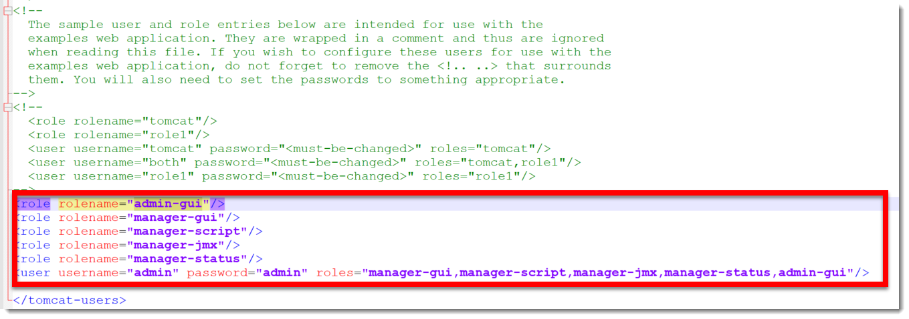

Tomcat
technologies. Tomcat provides a "pure Java" HTTP web server environment in which Java code can run.
Tomcat is developed and maintained by an open community of developers under the auspices of the Apache Software Foundation, released under the Apache License 2.0 license.
For more information visit Tomcat Page.
Configuring
As there are many versions avaiable of Tomcat, we need to understand which one to use in our projects.
For that matter, check the Apache Tomcat Versions.
|
As we are currently using Java 8 and 11 versions we can use any version from 8.5.72 and above. Here, we use 10.0.12. The instructions are the same for 8.5.x, 9.0.x. Besides, the instructions are written using a Microsoft Windows Operating System, so you can expect folder names or other specific commands in this Operating System. |
The first step is to go to the Apache Tomcat Download Page.
When you click you will move the page forward to the following place.
|
You can explore the other choices available, but here we use the indicated ZIP choice. |
As this is a ZIP file, use any tool to explode its contents. Take note of the location you exploded those contents as from now on, this is considered as the [TOMCAT_HOME], for example, [TOMCAT_HOME] is set to 'c:\java\apache-tomcat-10.0.12\'.
Set the following line inside file startup.bat or startup.sh in the [TOMCAT_HOME]\bin folder:
set CATALINA_OPTS="-agentlib:jdwp=transport=dt_socket,address=7999,server=y,suspend=n"You can see a screenshot showing this.
Using this configuration, you are telling Tomcat to expose port 7999 (change this number to one that is not used if you get a conflict) in order to connect to it remotely for debugging purposes.
Running Tomcat
Now you have the software installed and provided you have the proper [JAVA_HOME] setting configured, you can go to a terminal window (or use a BASH terminal in Windows) and type the following command.
|
Go to [TOMCAT_HOME]\bin folder. |
$ ./startupWhen executing this command it opens up a new window but this time it is for the Java process.
|
Here, Tomcat is using JRE_HOME for JDK 8, if you need to change this setting, you simply change the [JAVA_HOME] environment variable. |
When you need to stop the server, execute the [TOMCAT_HOME]\bin\shutdown.bat (Windows) or [TOMCAT_HOME]/bin/shutdown.sh (Linux) script.
|
If this does not work, go to the Tomcat Java Process window and press CTRL+C (Windows) to cancel the process (check your key in other Operating System. |
Take special care of the following:
|
Configure the SSL certificates to talk to other systems over HTTPS before starting the Tomcat instance to the JDK it is running with. See JDK |
To check that Tomcat server is working, open the followng URL in the browser:
http://localhost:8080/
|
If you need to change the port to any other available number for your configuration or if for some reason it is now used. Open the following file [TOMCAT_HOME]\conf\server.xml and locate the following entry Change the port value to the one you need. |
|
To access any of the Server Status, Manage App, Host Manager buttons, we need to configure the Tomcat Server for administrator users. To do so, go to [TOMCAT_HOME]\conf folder, locate the file tomcat-users.xml and add the following before closing the </tomcat-users>. Save the file and restart the server. Now when prompted for the user type admin/admin. Notice this is valid only for development environment and not for production environment.

Figure 7. Tomcat Users Settings
|
When you use any of the Server Status, Manage App, Host Manager options, you can see them in the following (remember to use an allowed user).
Server Status
With this option you can evaluate the status of the server. To access this option you need to provide an allowed user (see previous section).
Explore the options that are presented there.
Manage App
Here you can get a glimpse of all the applications deployed to the server. To access this option you need to provide an allowed user (see previous section).
|
If you place any WAR (this is the artifact that Tomcat server understands to properly configure as an application), and if you place this WAR into [TOMCAT_HOME]\webapps folder, the server will detect it and it deploys that artifat to the server. For example, if the WAR is name as my-app.war and you put into that folder, then the Tomcat server will deploy it and configure that application and configures its context such as 'http://localhost:8080/my-app' |
Virtual Host Manager
Here you will see the configuration of the running Tomcat server, this option is only available to be viewed with a browser that is running in the same computer the server is running. To access this option you need to be connected with an authorized user.